오늘의 과제

박사오늘은 세 사람이 서로 옷을 바꿔 입는다. 단, 손으로 다시 그리지 않고 AI와 VFX로만.

주판봇'하루에게 시아 옷'이라고 쓰면 끝이죠!

초파리 연구원AI는 시아 옷이 뭔지 몰라. 핏·소재·접점을 말로 풀어 줘야지.

모아제 카디건, 하루에게 어울릴까요?
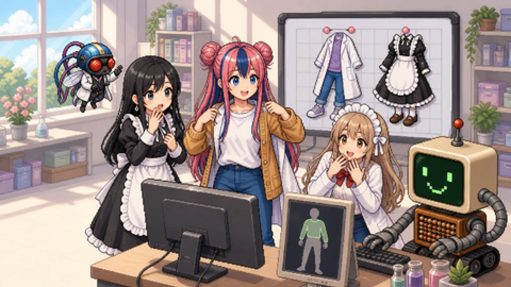
하루·시아·모아가 서로 옷을 바꿔 입어 봅니다. 손으로 다시 그리지 않고, AI에게는 말로, VFX 도구에는 숫자로 옷을 설명합니다.
그림 실력·코드·수식을 몰라도 됩니다. 실험을 눌러 보며 따라오세요.
옷 이름만이 아니라 핏(여유)·소재(두께·꺾임)·접점과 주름을 문장으로 적습니다
온라인 쇼핑의 상품 설명도 '면 100%, 오버핏, 두께감 보통'처럼 소재와 핏을 함께 적습니다.
이 시리즈의 옷 문장 예: 'loose oversized white cotton t-shirt (about 30% ease), soft medium-weight fabric, arms raised so folds gather at the shoulders and the hem rides up, large soft drape folds with shadows on the side away from the light'.


점검표 여섯 조각이 다 차면, 같은 요청을 여러 번 해도 핏과 소재가 크게 흔들리지 않습니다.
동작을 고르면 그 동작의 접점과 주름(2부 2단계, 4부)이 문장에 자동으로 들어갑니다. 동작 없이 옷만 적으면 주름 위치를 AI가 짐작합니다.
작업에서는 캐릭터마다 '옷 문장'을 파일로 저장해 두고, 동작 문장만 바꿔 씁니다.
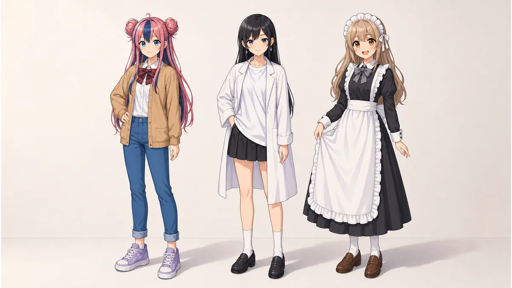
'oversized'라고 썼는데 결과의 티셔츠가 딱 맞습니다. 프롬프트를 늘리기만 하면 될까요?
단어 하나보다 결과로 확인할 특징을 함께 적는 편이 낫습니다. 'dropped shoulder seams, wide sleeves, large drape folds'처럼 헐렁함이 드러나는 모양을 적어 줍니다.
그림의 일부만 가리고 그 안만 다시 그리게 하면, 얼굴과 머리는 그대로 두고 옷만 바꿀 수 있습니다

학교 수학으로 보면 — 넓이와 비율 — 가로 × 세로, 그리고 부분 ÷ 전체입니다.
| 식 조각 | 뜻 |
|---|---|
| 가림 영역 | 다시 그리게 할 부분(마스크) |
| 전체 그림 넓이 | 가로 × 세로 픽셀 수 |
| 바뀌는 비율 | 그림 중 새로 그려질 몫 |

사진 앱의 '부분 지우기'도 손가락으로 칠한 곳만 다시 채웁니다. 너무 넓게 칠하면 배경까지 바뀝니다.
그림 생성 도구의 '부분 다시 그리기(인페인팅)'는 가린 곳만 잡음에서 다시 그립니다. 가린 곳 바깥의 몸 윤곽이 새 옷의 접점 역할을 하므로, 어깨·허리 윤곽을 남겨 두면 주름이 자연스럽게 이어집니다.
옷 영역에 딱 맞추면(100) 약 15%가 바뀌고 얼굴은 그대로입니다. 1.5배(150)로 넓히면 약 34%가 바뀌고 얼굴 일부가 가림 영역에 들어갑니다.
옷보다 작게 가리면(60 이하) 옛 옷의 소매·끈이 남아 이음매가 생깁니다. 경계를 조금 흐리면 이음매가 덜 보입니다.
작업에서는 옷 영역보다 조금 넉넉하게, 얼굴·머리·손은 피해서 가리고, 경계는 몇 픽셀 흐립니다.
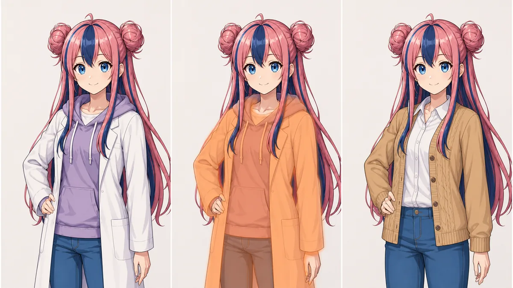
옷만 바꿨는데 결과에서 하루의 머리 번이 사라졌습니다. 왜 그럴까요?
가림 영역이 머리까지 닿았거나, 전체를 다시 그렸을 가능성이 큽니다. 가림 영역을 확인하고, 프롬프트의 캐릭터 고정 문장도 함께 넣습니다.
3D 천 계산에서는 무게·뻣뻣함·늘어남을 숫자로 정합니다. 1~3부의 소재감을 값으로 옮깁니다
세탁기의 '울 코스·면 코스'도 소재마다 물살과 회전 값을 미리 정해 둔 소재표입니다.
영화·게임 VFX에서는 의상 시뮬레이션 프로그램의 소재 프리셋(저지·면·울·실크 등)으로 시작해, 장면을 보며 값을 조금씩 조절합니다. 이 페이지의 낱말은 도구에서 보통 이렇게 불립니다: 무게 = 질량·밀도(mass·density), 뻣뻣함 = 굽힘 강성(bending stiffness), 늘어남 = 신축 강성(stretch stiffness), 그리고 흔들림이 가라앉는 빠르기 = 감쇠(damping). 무게가 크면 처짐이 크고, 굽힘 강성이 크면 주름이 굵고 적어집니다.
저지(가볍고 부드러움)는 중간 크기 주름이 고르게, 면 셔츠(조금 뻣뻣함)는 주름이 덜 생기고 각이 섭니다.
울 코트(무겁고 뻣뻣함)는 굵은 주름 몇 개만, 실크(가볍고 아주 부드러움)는 잔주름이 많고 길게 처집니다.
작업에서는 프리셋으로 시작해 한 번에 값 하나씩만 바꾸며 차이를 봅니다. 두 값을 한꺼번에 바꾸면 무엇 때문에 달라졌는지 모릅니다.
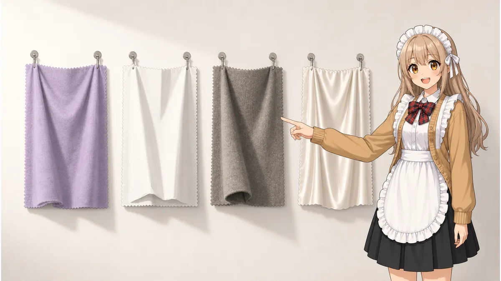
AI에게 '3D cloth simulation'이라고 그림을 요청했는데 천이 너무 반짝입니다. 소재값 문제일까요?
그림 생성 AI는 실제로 천을 계산하지 않습니다. 소재값이 아니라 표현 문장의 문제입니다. 'matte wool texture, soft diffuse lighting'처럼 질감과 빛을 적어 줍니다.
픽셀·애니·반실사·실사로 화풍을 바꾸면, 같은 옷이라도 그려야 할 주름 선과 그림자 단계의 수가 달라집니다
지하철 노선도는 실제 지도보다 훨씬 단순하지만, 길을 찾는 데는 오히려 더 좋습니다.
이 시리즈의 예시 기준: 픽셀은 큰 주름 2~3개와 그림자 2단계, 애니풍은 큰 주름 3~5개와 그림자 2~3단계, 반실사는 잔주름까지 6~8개와 부드러운 그라데이션, 실사풍은 실제 천의 모든 주름과 질감.

픽셀은 주름 2~3개·그림자 2단계, 애니풍은 3~5개·2~3단계, 반실사는 6~8개와 그라데이션, 실사풍은 실제 질감까지 담습니다(예시 기준).
화풍을 바꿀 때 주름의 '위치'(접점·핏·소재가 정한 자리)는 그대로 두고 '양'만 바꿉니다.
작업에서는 프롬프트의 화풍 문장에 주름의 양을 함께 적습니다(예: 'only 2–3 large folds, 2-tone shading').
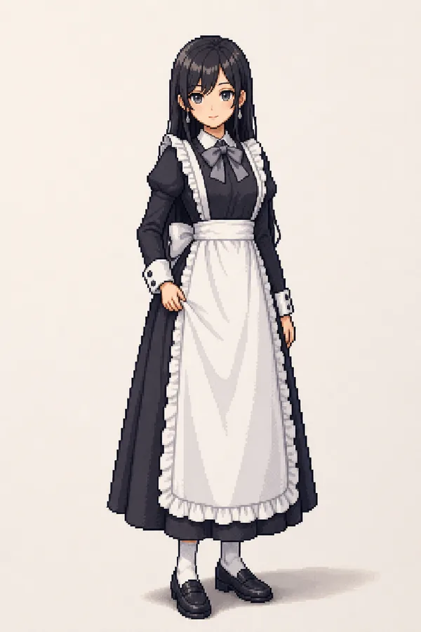
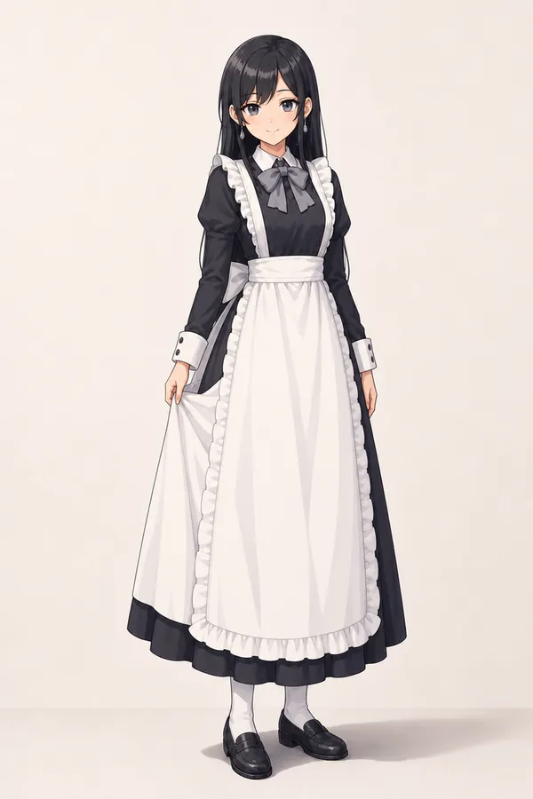
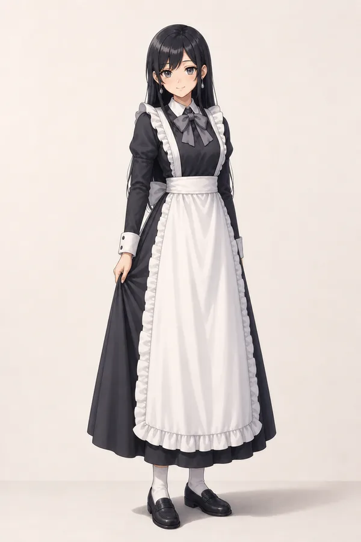
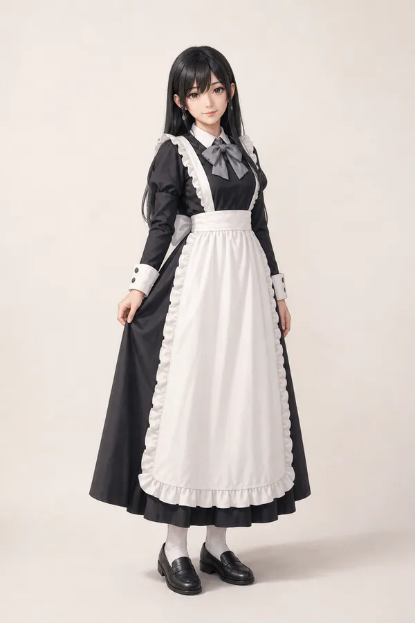
실사풍은 캐릭터를 코스프레한 가상의 성인 모델 사진으로 만든 것입니다. 실존 인물이 아닙니다.
픽셀아트로 요청했는데 결과에 잔주름 그러데이션이 가득합니다. 문제일까요?
픽셀아트는 색 수와 단계가 적어야 합니다. 'limited palette, 2–3 tone shading, only the largest folds'처럼 양을 줄이는 문장을 넣습니다.
이 부에서 배운 원리를 그림 생성 AI(Genspark 등)로 직접 확인합니다. A는 이 페이지 그림을 실제로 만든 프롬프트, B는 원리를 하나 빼거나 바꾼 비교용 문장입니다.
참고 그림 내려받기: haru_anime_base · sia_anime_base · moa_anime_base · haru_sheet · sia_sheet · moa_sheet · doctor_sheet · fruitfly_sprites_6 · jupanbot_ref_genspark_v0 · pixel_style_ref_prev_cover
옷 문장(종류·핏·소재)을 갖춘 프롬프트로 옷을 바꿔 입히고, 이름만 쓴 프롬프트와 비교합니다. 1단계 조립기로 만든 문장을 써도 됩니다.
첨부: refs/haru_anime_base.png, refs/sia_anime_base.png, refs/moa_anime_base.png
Illustration, wide 16:9. Art style: high-quality anime illustration, clean confident lineart, two-tone cel shading with a darker second shadow only in the deepest folds, natural adult proportions. Match the attached reference images exactly (face, hair, colors, accessories). All characters are adults in their early twenties (the Professor is an adult man); modest outfits exactly as described. Three characters standing in a row, full body, each wearing another member's outfit: Haru (adult lab assistant, long straight pink hair with navy streaks and a thick navy streak down the center of the bangs, two round hair buns on top, small ahoge, big blue eyes), wearing camel knit cardigan over a white blouse, red and navy plaid bow tie, rolled-up jeans; Sia (adult maid intern, long straight jet-black hair, no headdress, gray eyes, small silver earrings), wearing loose oversized white t-shirt under an open white knee-length lab coat, black skirt; Moa (adult maid intern, long ash-beige wavy hair, white frilled maid headband with a white ribbon over her LEFT ear, amber eyes), wearing charcoal-black long-sleeved maid dress with a large gray bow and a long white frilled apron — Moa keeps her white frilled headband with the ribbon over her LEFT ear. Each outfit keeps its own fabric feel: knit with soft rounded folds, loose t-shirt with large drape folds, maid dress with crisp pleats. Light from the upper left. Plain off-white studio background or a bright clean lab interior. No text, no letters, no numbers, no logos, no watermark, no revealing clothing, not childlike, no school uniform, not resembling any famous anime character.
Three anime girls standing in a row: Haru wearing Moa's outfit, Sia wearing Haru's outfit, Moa wearing Sia's outfit. No text.
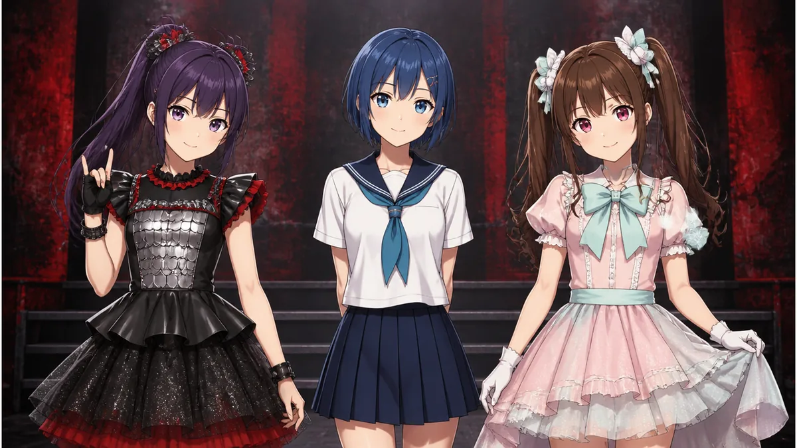
실제 결과: 이름만 넣은 B에서는 전혀 다른 세 사람이 나왔고, 가운데는 학교 교복 같은 옷까지 입었습니다. AI는 '하루·모아의 옷'이 무엇인지 모릅니다. 6부 '옷 이름 하나로 나이가 달라 보인다'와 같은 이유입니다.
한 장짜리 설명 그림이 아니라, 실제 도구의 '부분 수정(인페인팅)' 기능으로 옷만 바꿔 봅니다. 이 페이지 그림은 가운데 단계의 가림 영역이 주황 옷처럼 그려졌습니다 — 설명 그림과 실제 기능은 다릅니다.
첨부: refs/haru_anime_base.png, refs/sia_anime_base.png, refs/moa_anime_base.png
Illustration, wide 16:9. Art style: high-quality anime illustration, clean confident lineart, two-tone cel shading with a darker second shadow only in the deepest folds, natural adult proportions. Match the attached reference images exactly (face, hair, colors, accessories). All characters are adults in their early twenties (the Professor is an adult man); modest outfits exactly as described. Three panels of the same upper-body portrait: 1) Haru (adult lab assistant, long straight pink hair with navy streaks and a thick navy streak down the center of the bangs, two round hair buns on top, small ahoge, big blue eyes), wearing lavender hoodie with white drawstrings over a white t-shirt, open white knee-length lab coat, rolled-up jeans, lavender sneakers; 2) the same image with only the clothing area (torso and arms) covered by a semi-transparent orange overlay with slightly soft edges, the face, hair buns and navy streaks clearly outside the overlay; 3) the result: identical face and hair, but the hoodie and lab coat replaced by a camel knit cardigan over a white blouse. Face and hair must be pixel-identical in all three panels. No labels. Plain off-white studio background or a bright clean lab interior. No text, no letters, no numbers, no logos, no watermark, no revealing clothing, not childlike, no school uniform, not resembling any famous anime character.
1) 하루 그림(예: 앞 시리즈의 애니풍 기준 전신)을 올립니다. 2) 수정 붓으로 몸통과 팔만 칠합니다. 얼굴·머리 번·남색 줄은 피하고, 옷보다 조금 넉넉하게. 3) 프롬프트: camel knit cardigan over a white blouse, red and navy plaid bow tie, soft thick knit with broad rounded folds, light from the upper left. Keep the face and hair unchanged. 4) 결과가 이음매를 보이면 칠한 영역을 조금 넓히거나 경계를 흐리게 해 다시.
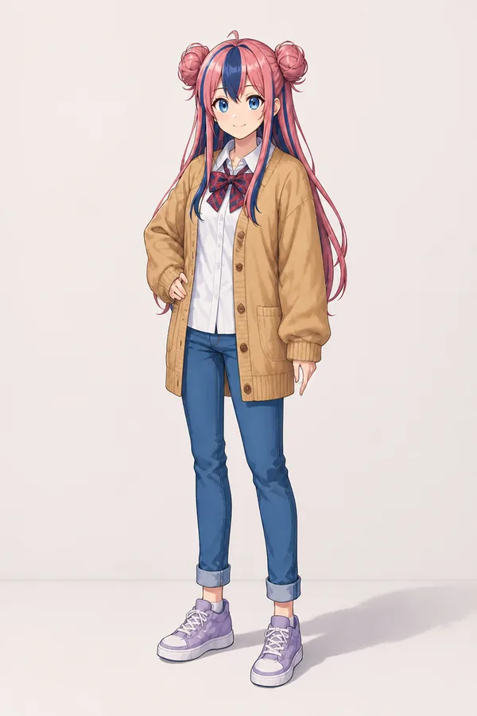
실제 결과: 얼굴·머리 번·남색 줄은 그대로 두고 옷만 니트 카디건으로 바뀌었습니다.
도구마다 이 기능의 이름이 다릅니다(부분 수정, 인페인팅, 영역 편집 등). 영역을 칠하는 붓이 있으면 같은 기능입니다.
같은 크기의 천 네 장이 소재마다 다른 주름을 만드는지 봅니다. 그림 생성 AI는 천을 계산하지 않으므로, 결과는 '소재를 말로 얼마나 잘 전했나'를 보여 줍니다.
첨부: refs/haru_anime_base.png, refs/sia_anime_base.png, refs/moa_anime_base.png
Illustration, wide 16:9. Art style: high-quality anime illustration, clean confident lineart, two-tone cel shading with a darker second shadow only in the deepest folds, natural adult proportions. Match the attached reference images exactly (face, hair, colors, accessories). All characters are adults in their early twenties (the Professor is an adult man); modest outfits exactly as described. A clean 3D render style scene: four identical square fabric samples hanging from two metal hooks each, in a row: soft cotton jersey (medium rounded folds), crisp cotton (fewer, angular folds), thick wool (one or two broad heavy folds), light silk (many fine long flowing folds). Moa (adult maid intern, long ash-beige wavy hair, white frilled maid headband with a white ribbon over her LEFT ear, amber eyes), wearing camel knit cardigan over a white blouse, red and navy plaid bow tie, white frilled apron, black skirt stands at the right side in anime style, pointing at the wool sample. Neutral gray studio, soft light from the upper left. Plain off-white studio background or a bright clean lab interior. No text, no letters, no numbers, no logos, no watermark, no revealing clothing, not childlike, no school uniform, not resembling any famous anime character.
Same scene. Change only: all four samples are the same plain cotton fabric. Still no text.
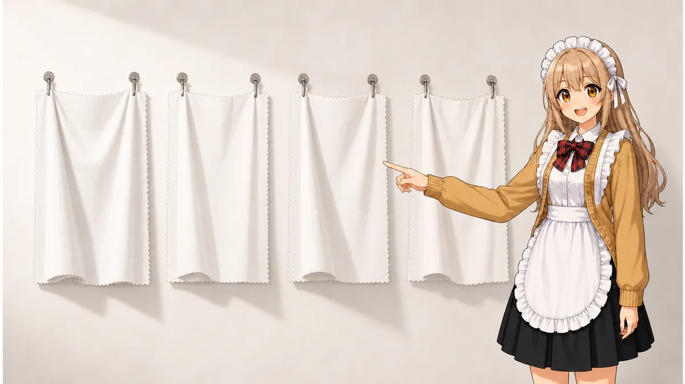
실제 결과: 네 장이 모두 같은 흰 면이 되어 구별되지 않았습니다. 소재 낱말이 소재의 차이를 만듭니다.
실제 천 계산은 VFX 도구(의상 시뮬레이션)에서 무게·뻣뻣함 값으로 합니다. 3단계 실험과 연습장 소재 실험실이 그 연습입니다.
아래 프롬프트의 'Art style' 줄만 바꿔 네 번 만들고, 주름의 위치는 그대로인데 양만 달라지는지 봅니다.
첨부: refs/sia_anime_base.png, refs/sia_sheet.png
Full body character illustration, vertical 2:3. Art style: detailed 16-bit SNES-era pixel art with clearly visible square pixels, limited palette, bold dark outline, 2–3 tone shading; only the two or three largest folds of the apron and skirt are shown. Match the attached reference images exactly (face, hair, colors, accessories). Sia (adult maid intern, long straight jet-black hair, no headdress, gray eyes, small silver earrings), wearing charcoal-black long-sleeved maid dress, large gray bow at the collar, long white frilled apron, standing in a relaxed three-quarter pose, one hand lightly holding the edge of the apron. Same pose, same framing and same lighting (soft light from the upper left) as the other three images of this set. Plain off-white studio background. No text, no letters, no numbers, no logos, no watermark, no revealing clothing, not childlike, no school uniform, not resembling any famous anime character.
애니풍: Art style: high-quality anime illustration, clean lineart, two-tone cel shading; three to five large folds. 반실사: Art style: semi-realistic 2.5D digital painting, six to eight folds including smaller ones, soft gradient shading. 실사풍: Art style: photorealistic studio photograph of a fictional adult model in her early twenties cosplaying this original character; not resembling any real celebrity.
'직접 만들어 보기'가 이 페이지 그림을 다시 만들어 보는 것이었다면, 연습 문제는 새 상황을 스스로 풀어 보는 것입니다. 정답 그림은 하나가 아니므로, 아래 '예상 결과'는 완성 예시 프롬프트로 실제로 만든 한 가지 예입니다.
참고 그림 내려받기: haru_anime_base · sia_anime_base · moa_anime_base · haru_sheet · sia_sheet · moa_sheet · doctor_sheet · fruitfly_sprites_6 · jupanbot_ref_genspark_v0 · pixel_style_ref_prev_cover
5부 1단계 조립기의 여섯 조각(종류·핏·소재·동작과 접점·빛·금지)을 직접 채워 박사에게 모아의 카디건 스타일을 입힙니다. 이름이 아니라 옷을 말로 설명하는 연습입니다.
camel knit cardigan(종류) · regular fit(핏) · soft thick knit with broad rounded folds(소재).
책을 펼쳐 들기 → 팔꿈치 안쪽 모임 주름, 어깨에서 처짐.
① [종류] ② [핏] ③ [소재] ④ [동작과 접점] ⑤ [빛] ⑥ [금지: 성인 비율, 노출 금지 …]
첨부: refs/doctor_sheet.png
Illustration, vertical 2:3. Art style: high-quality anime illustration, clean confident lineart, two-tone cel shading with a darker second shadow only in the deepest folds, natural adult proportions. Match the attached reference images exactly (face, hair, colors, accessories). All characters are adults in their early twenties (the Professor is an adult man); modest outfits exactly as described. Full body of the Professor (adult male scientist, dark charcoal spiky hair with a white streak at the front, very thick black eyebrows, teal rectangular glasses), wearing a camel knit cardigan (regular fit, soft thick knit with broad rounded folds) over a light blue shirt and black tie, dark gray trousers, holding an open book with both hands at chest height. Folds gather inside the bent elbows and drape softly from the shoulders; the knit shows rounded soft shadows. Adult man in his thirties, normal proportions (not chibi). Light from the upper left. Plain off-white studio background or a bright clean lab interior. No text, no letters, no numbers, no logos, no watermark, no revealing clothing, not childlike, no school uniform, not resembling any famous anime character.
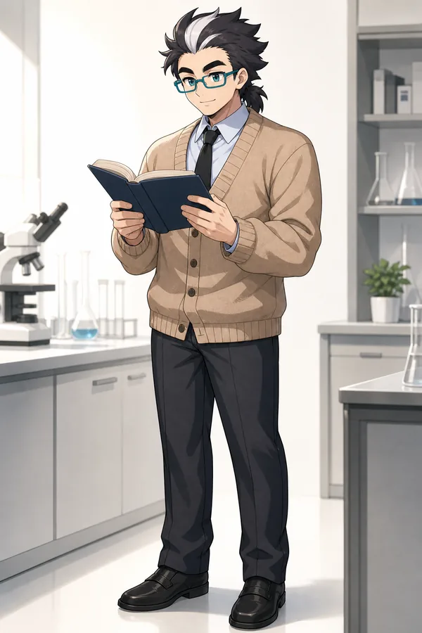
박사는 그대로인데 옷만 부드러운 낙타색 카디건으로 바뀌었습니다. 팔꿈치 안쪽에 둥근 주름이 모이고, 어깨에서 천이 부드럽게 처져 셔츠·조끼 때보다 인상이 한결 편안합니다.
실제로 나온 결과 — 박사의 얼굴·머리·안경은 그대로이고 옷만 부드러운 카디건으로 바뀌었습니다. 팔꿈치 안쪽에 둥근 주름이 모였습니다.
| 증상 | 같은 대화에 이어 붙일 문장 |
|---|---|
| 다른 사람이 나왔다 | Same request. Add the character fixed sentence: dark charcoal spiky hair with a white streak, very thick black eyebrows, teal rectangular glasses. |
| 카디건이 빳빳해 보인다 | Same image. Change only: soft thick knit, broad rounded folds and rounded soft shadows. |
5부 4단계: 화풍을 바꿀 때 주름의 '위치'는 그대로, '양'만 줄입니다. 3부 연습의 울 코트 하루를 픽셀아트로 옮겨 봅니다.
팔꿈치 안쪽 굵은 주름 2~3개, 그림자는 2단계.
번 두 개, 앞머리 가운데 남색 줄, 라벤더 운동화.
Art style: [픽셀아트, 네모 픽셀, 제한된 색] / 주름 [2~3]개, 그림자 [2]단계 / 나머지(인물·옷·자세·빛)는 [앞 그림과 같게]
첨부: refs/haru_anime_base.png, refs/pixel_style_ref_prev_cover.png
Illustration, vertical 2:3. Art style: high-quality anime illustration, clean confident lineart, two-tone cel shading with a darker second shadow only in the deepest folds, natural adult proportions. Match the attached reference images exactly (face, hair, colors, accessories). All characters are adults in their early twenties (the Professor is an adult man); modest outfits exactly as described. Full body of Haru (adult lab assistant, long straight pink hair with navy streaks and a thick navy streak down the center of the bangs, two round hair buns on top, small ahoge, big blue eyes), wearing a thick heavy camel wool double-breasted coat over her hoodie, rolled-up jeans and lavender sneakers, standing with her arms crossed. Art style override: detailed 16-bit SNES-era pixel art with clearly visible square pixels, limited palette, bold dark outline, 2-tone shading; only the two or three largest folds inside the elbows are shown. Light from the upper left. Plain off-white studio background or a bright clean lab interior. No text, no letters, no numbers, no logos, no watermark, no revealing clothing, not childlike, no school uniform, not resembling any famous anime character.
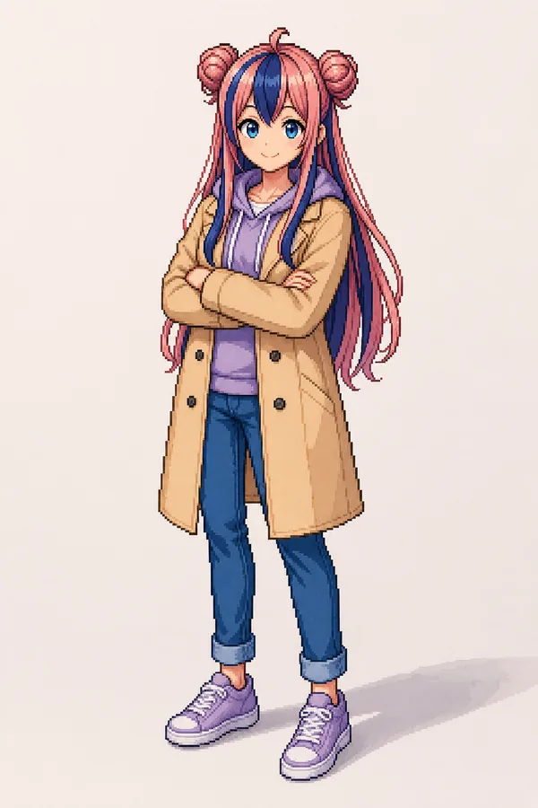
네모 픽셀로 된 하루가 같은 자세로 서 있고, 코트에는 팔꿈치 안쪽 굵은 주름 두세 개와 2단계 그림자만 있습니다. 주름이 적은데도 팔짱 낀 자세와 코트의 두께가 그대로 읽힙니다.
실제로 나온 결과 — 네모 픽셀이 또렷한 픽셀아트로 나왔고, 코트 주름은 팔꿈치 안쪽 몇 개로 줄었습니다. 번 두 개와 남색 줄도 픽셀로 보입니다.
| 증상 | 같은 대화에 이어 붙일 문장 |
|---|---|
| 픽셀이 매끈하게 뭉개졌다 | Same image. Change only: clearly visible square pixels, limited palette, no smooth gradients. |
| 잔주름이 많다 | Same image. Change only: keep only the two or three largest folds. |

| 항목 | 주판봇 | 초파리 |
|---|---|---|
| 닮음(외형 고정값) | 4 | 9 |
| 옷 재현(핏·소재) | 5 | 8 |
| 자연스러움(이음매·정보량) | 5 | 8 |
| 합계 | 14 | 25 |


점수는 이야기 속 예시입니다. 실제 그림을 평가한 값이 아닙니다.
| 주제 | 한 줄 | 작업에서는 |
|---|---|---|
| 옷 문장 | 종류·핏·소재·동작·주름·금지 | 캐릭터별 옷 문장 저장 |
| 가림 영역 | 바뀌는 비율 = 가린 넓이 ÷ 전체 | 옷보다 조금 넉넉히, 얼굴은 피해서 |
| VFX 소재표 | 무게·뻣뻣함·늘어남 | 프리셋에서 값 하나씩 |
| 화풍별 양 | 위치는 그대로, 양만 바꾼다 | 화풍 문장에 주름 양 적기 |


이 페이지에 나온 개념·방법·비유·쓰임을 모았습니다. 검색하고, "설명 보러 가기"로 본문에 돌아갑니다.
지식 색인을 출처와 함께 파일로 내려받습니다. 서지 관리는 BibTeX·RIS, 온톨로지 편집은 Turtle, 그래프 도구는 CSV, 여러 페이지 합치기는 kg.json입니다.